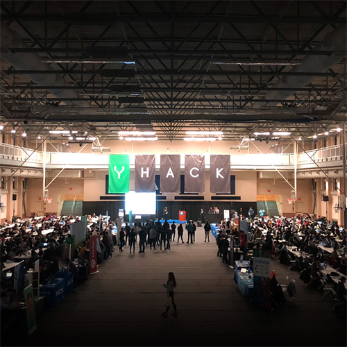

projects
 |
yhack 2019design Brand managing for 2019 iteration of YHack, Yale's premiere student-run hackathon. Tshirts, stickers, shot glasses, and more. Working in Adobe Photoshop CC 2018.
|
|  | yhack sponsorship rebrandingdesign Redesigned sponsorship brochure for the 2019 iteration of YHack, working in |
 |
cross campussound engineering
Stitching interview audio into a final product to be released as a podcast on Spotify, Soundcloud, and Apple Podcasts. Working in Audacity. Powered by the Yale Daily News, hosted by Allison Park |
 |
pocket adventure: cultural immersionjava, greenfootGreenfoot java game, designed with educators in mind, for elementary school learners. Facilitates language learning and cultural empathy. All graphics by me. Writeup Paper |